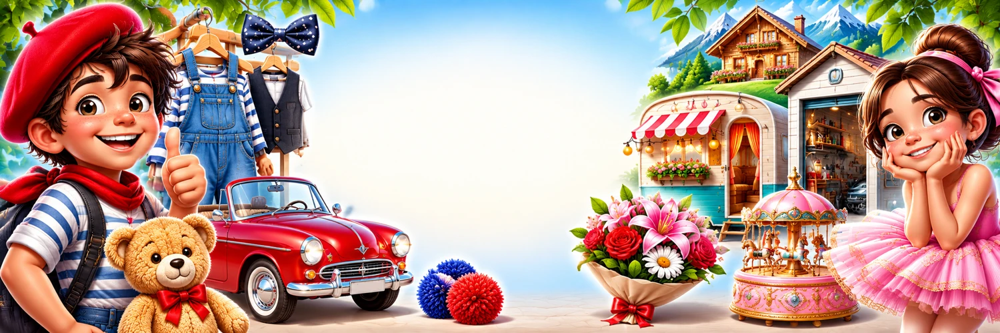

🇫🇷 Tu parles déjà français ! – Parli già francese!
Lo sapevi che molte parole francesi le usiamo ogni giorno anche in italiano? Quante ne conosci? Scegli la tua missione, osserva le immagini e mettiti alla prova!
Scegli un percorso e conquista il timbro: 6 risposte esatte su 10!
À table !
Detective del gusto
14 parole del mondo del cibo

C'est la vie !Detective delle parole
23 parole della vita quotidiana